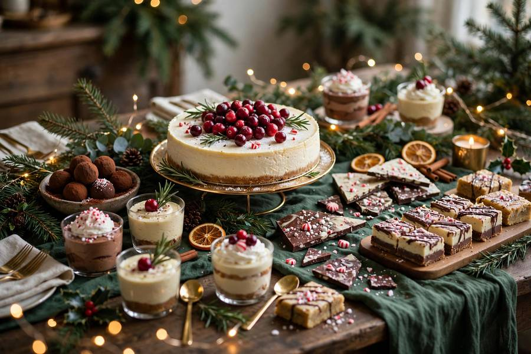
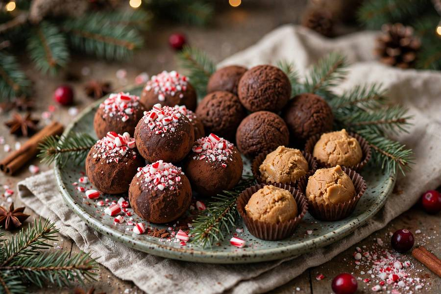
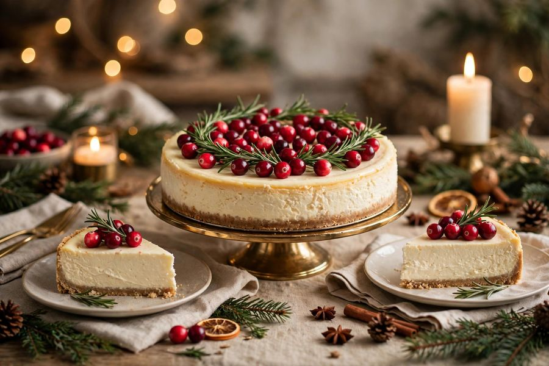

25+ No-Bake Christmas Desserts for a Crowd
📌 Save to Pinterest
The oven is already busy with the turkey and the ham — so let dessert take care of itself. This roundup gathers twenty-five no-bake Christmas desserts for a crowd: truffles you can roll by the dozen, cheesecakes that set in the fridge, bars that slice cleanly for a party, and festive cups and parfaits that look like they took hours. No oven needed, no stress, and every one of them tastes like the holidays.
How to plan no-bake desserts for a crowd
No-bake desserts are made for crowds because most of them are made in a pan, a bowl, or a tray — and they scale up easily. Pick one showpiece (a cheesecake or a trifle), one bite-size treat (truffles or bars), and one lighter option (mousse cups or fruit parfaits), and the dessert table is done. Almost everything here needs fridge time, so make them the day before and free up the whole day of the party. Keep chilled desserts cold until serving, and set out small plates so guests can take a little of everything.
Good to know: Everything is written in American English, and measurements use US customary units — cups, tablespoons, and Fahrenheit — for cooks in the United States. Always follow safe food-handling guidance, and keep dairy and egg desserts refrigerated until serving time.
Truffles & bites
Small, rich, and easy to make by the dozen — truffles are the simplest crowd dessert there is.
1. Classic Chocolate Truffles
Dark, silky truffles rolled in cocoa — the kind of bite that tastes like a chocolate shop. Roll them small; one or two per guest is plenty.
2. Peppermint Truffles
Cool peppermint truffles rolled in crushed candy cane. They taste like Christmas and they look like it too, with their red and white sparkle.
3. Peanut Butter Balls
Creamy peanut butter balls dipped in chocolate, finished with a drizzle. They are the first thing to disappear from the dessert table.
4. Rum Balls
Rich, boozy rum balls rolled in cocoa or nuts. They keep for days and taste better with a little time, so make them early.
5. Coconut Snowballs
White chocolate and coconut bites rolled in shredded coconut until they look like little snowballs. Light, sweet, and made for a winter table.

Cheesecakes & pies
A chilled cheesecake or a silky pie is the showpiece of a no-bake dessert table — slice it at the table and let everyone watch.
6. No-Bake Cranberry Cheesecake
A creamy cheesecake topped with a bright cranberry sauce. The tart cranberries cut through the richness and the red topping looks made for Christmas.
7. Peppermint Cheesecake
A cool, minty cheesecake with crushed candy cane on top. It tastes like a peppermint stick and it slices cleanly from the fridge.
8. Gingerbread Cheesecake
A spiced cheesecake on a gingersnap crust, with all the warm flavors of gingerbread. It is the cheesecake to make when the rest of the menu is simple.
9. Chocolate Silk Pie
A silky chocolate filling in a cookie crust, topped with whipped cream and chocolate shavings. Rich, smooth, and completely oven-free.
10. Eggnog Cream Pie
A creamy eggnog-flavored pie with a dusting of nutmeg on top. It tastes like the holidays in a slice.
Bars & slices
Bars are the workhorse of a crowd dessert table: one pan, clean slices, and easy to stack on a plate.
11. Peppermint Bark
Layers of dark and white chocolate with crushed candy cane, broken into shards. It looks like stained glass and it takes minutes to make.
12. Christmas Rocky Road
Chocolate, marshmallows, nuts, and dried cranberries set into a slab and cut into squares. Sweet, crunchy, and festive in every bite.
13. No-Bake Cookie Bars
Crushed cookies, chocolate, and a creamy layer pressed into a pan and chilled. They slice neatly and they travel well to a party.
14. Peanut Butter Bars
A thick peanut butter layer under a chocolate top, cut into squares. Rich, salty-sweet, and the bar everyone asks about.
15. Cranberry Bliss Bars
White chocolate and cranberry bars with a cream cheese frosting and a cranberry drizzle. They taste like the coffee-shop favorite, made at home.
Cups & parfaits
Individual cups and parfaits are made for parties — no slicing, no serving, just pick one up and enjoy.
16. Chocolate Mousse Cups
Light, airy chocolate mousse spooned into small cups with whipped cream on top. Elegant, rich, and easy to make ahead.
17. Peppermint Mousse Cups
Cool peppermint mousse layered with crushed candy cane in a glass. They look beautiful on a dessert table and taste like a candy cane.
18. Eggnog Panna Cotta
A silky eggnog panna cotta with a dusting of nutmeg, set in small glasses. It is the most elegant dessert on this list.
19. Berry Trifle Cups
Layers of cake, cream, and berries in individual glasses. They are easy to assemble, they look stunning, and everyone gets their own.
20. Tiramisu Cups
Coffee-soaked ladyfingers layered with mascarpone cream in small cups, dusted with cocoa. A classic, made party-friendly.

Chocolate & candy treats
The fun end of the dessert table — sweet, crunchy, and made for grazing all evening.
21. Chocolate-Covered Pretzels
Crunchy pretzels dipped in chocolate and finished with sprinkles or crushed candy cane. Sweet, salty, and a hit with kids.
22. Reindeer Chow
Chocolate-coated cereal tossed with powdered sugar, pretzels, and red and green candies. It is the snack mix everyone grazes on all night.
23. Christmas Fudge
Rich, creamy fudge with cranberries and pistachios, cut into neat squares. It keeps for weeks and it makes a wonderful gift.
24. Toffee Bark
Buttery toffee topped with chocolate and chopped nuts, broken into shards. Sweet, crunchy, and dangerously easy to keep eating.
25. Chocolate-Dipped Marshmallows
Fluffy marshmallows dipped in chocolate and rolled in sprinkles or crushed candy cane. They are fun to make with kids and they look like snowmen treats.
Make-ahead & storage tips
Almost everything in this roundup is made a day or two ahead — that is the whole point of no-bake desserts. Truffles and bars keep for a week in the refrigerator in an airtight container. Cheesecakes and pies need a full night in the fridge to set properly, so make them the day before the party. Mousse cups and parfaits can be assembled the morning of the party and kept cold until serving. Freeze what you cannot use, in portions, and thaw in the refrigerator overnight.
Keep exploring
- Browse the Desserts & Baking roundups — cookies, cakes, pies and sweet bakes.
- Browse all six categories — breakfast, lunch and dinner, desserts, air fryer, healthy recipes, and appetizers.
- More about the kitchen — what The Tasty Recipe Co is and how it works.
About the Editorial Team: This article was created by the editorial team behind The Tasty Recipe Co. The site publishes recipe roundups for home cooks, one at a time, with each article checked live before the next one begins. Learn more on our About page.
Recipe results can vary with ingredients, equipment, and technique. See our Disclaimer for food-safety and allergy notes.